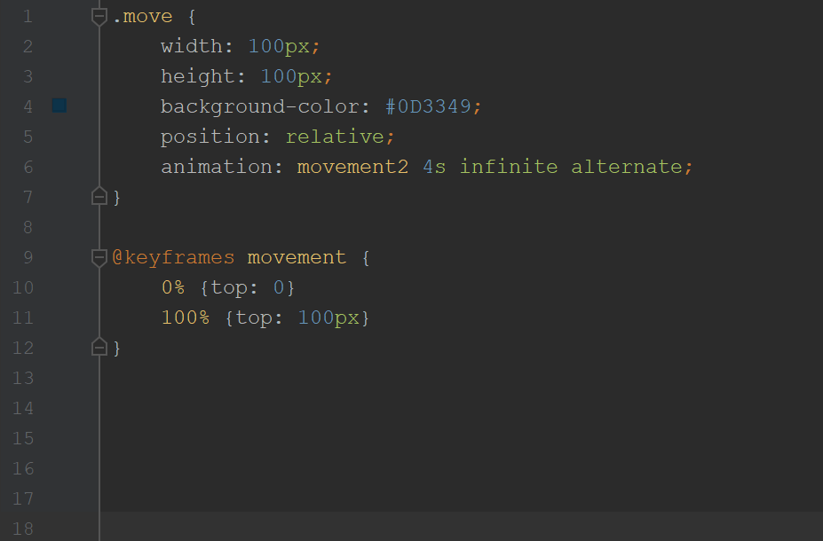

CSS Keyframes
Spencer Prentiss
What?
Gradual change in CSS styles
Feature of CSS animation module
From traditional animation
Introduced in CSS3
Why?
Adobe Flash is outdated
JS can be complicated*
More functions than CSS transition
Written right in the CSS
*Keyframes can also be lengthy
What can keyframes do?
Movement
Color
Change shapes
How do you use it?
It's pretty simple
Establishing
Duration
Styles

Some Rules
Ignores !important
animation
is shorthand for a bunch of properties
Can define many styles in each step
top
and
left
define location
Can combine with
transform
END